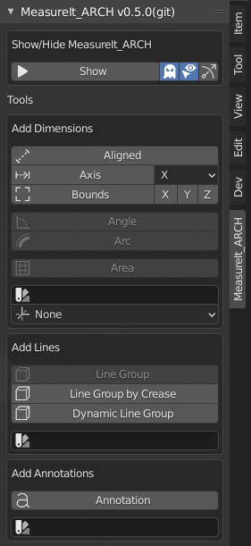
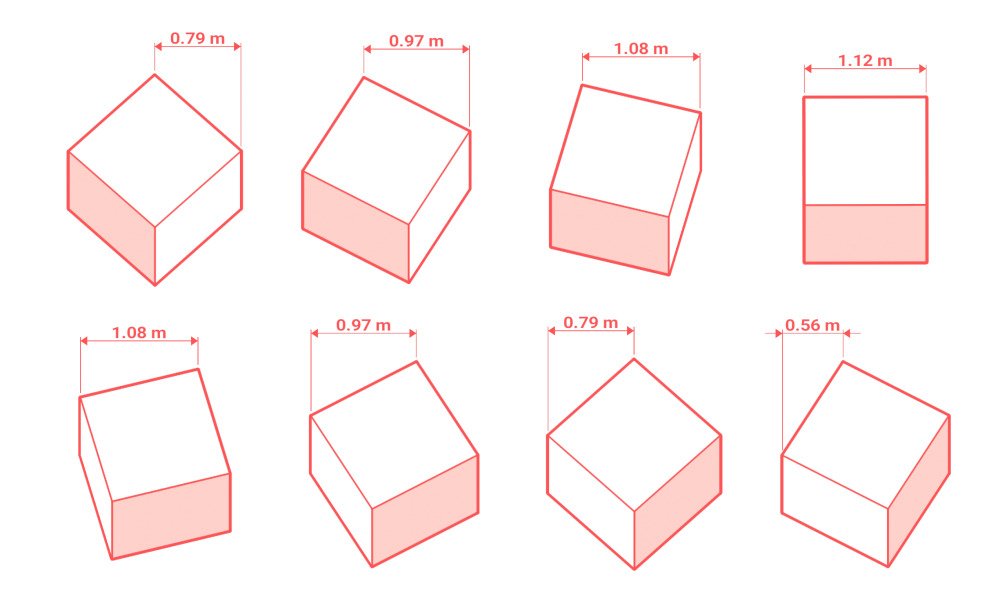
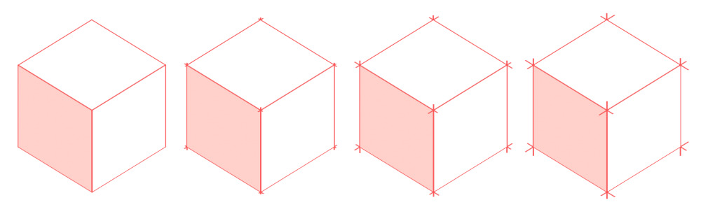
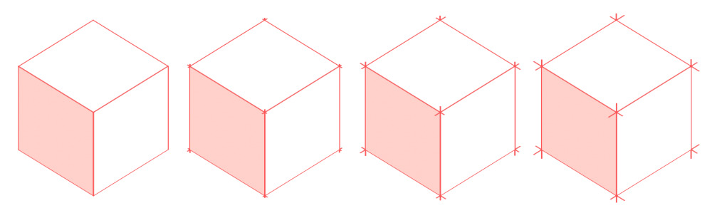

MeasureIt_ARCH Dimension, Annotation and Linework tools for Blender 2.8
MeasureIt_ARCH is a fork of Antonio Vazquez's MeasureIt Addon.
Installation
- Install Blender 2.8 or higher
- Download the latest zip file from https://github.com/kevancress/MeasureIt_ARCH
- Open the Add-on Preferences (Edit -> Preferences -> Add-ons) and click install.

- Navigate to and double click on the "MeasureIt_ARCH_VERSION.zip"
- Click the Checkbox to enable the Add-on
Features & User Interface
Main Tool Panel

The main tool panel is where you can add MeasureIt_ARCH elements to your 3D scene. This panel is located on the right of the 3D Viewport. Tool panel visibility can be toggled by pressing the "n" key.
Show / Hide MeasureIt_ARCH Toggle
- Shows and hides all items created by MeasureIt_ARCH.
Selected Object Only Toggle (Ghost Icon)
- When disabled, MeasureIt_ARCH will only show elements attached to the currently selected objects.
Highlight Active (Cursor & Eye Icon)
- When enabled, the active MeasureIt_ARCH element will be highlighted in Blender's selection color.
Show Gizmos (Arrow Icon)
- When enabled MeasureIt_ARCH will show gizmos for all elements attached to the selected object.
Add Dimensions
Aligned
- Adds an Aligned Dimension between 2 Objects or Vertices.
- Object Mode: Select two objects and then press the Aligned Button.
- Edit Mode: Select two or more Vertices and press the Aligned Button.

Axis
- Adds a Dimension that measures along a single Axis between 2 Objects or Vertices.
- Object Mode: Select two objects and then press the Aligned Button.
-
Edit Mode: Select two or more Vertices and press the Aligned Button.
-
Axis Selection: Picks the axes to be dimensioned on creation.

Bounds (Object Mode Only)
- Adds a set of Dimensions that measure the Bounding Box of the selected object
- Axis Selection: Picks the bounding box axis to be displayed on creation.
Angle (Edit Mode Only)
- Adds an Angle Dimension for 3 selected vertices.
- The 2nd vertex selected defines the corner of the angle.

Arc (Edit Mode Only)
- Adds an Arc Dimension circumscribing the 3 selected vertices.

Area (Edit Mode Only)
- Adds an Area Dimension to the selected faces.
- The Area Dimension text will be placed at the center of the bounding box of the active face.
Dimension Style (Color Swatch Icon)
- Selects a Style to be assigned to new dimensions on creation.
View Plane (Axis Icon)
- Lets you select the preferred view plain for new dimensions (used to automatically place dimensions on creation).
- XY Plane (Plan View): Dimensions placed to be viewed from the top or bottom.
- YZ Plane (Section/ Elevation View): Dimensions placed to be viewed from the left or right.
- XZ Plane (Section/ Elevation View): Dimensions placed to be viewed from the front or back.
- None: Dimensions placement will adjust automatically based on your viewpoint and the angles of the adjacent surfaces.
Add Lines
Line Group (Edit Mode Only)
- Creates a Line Group from selected edges. Select the desired edges in edit mode and press the Line button.
Line Group by Crease (Object Mode Only)
- Creates a Line Group from any edges sharper than the specified crease angle.

Dynamic Line Group(Object Mode Only)
- Same behaviour as Line Group by Crease, but will refresh automatically when entering and leaving Edit Mode (NOTE: May be slow on large meshes)
Line Style (Color Swatch Icon):
- Style to be assigned to a new Line Group on creation.
Add Annotations
Annotation:
- Adds an Annotation to the selected Object or Vertex.
Annotation Style (Color Swatch Icon):
- Style to be assigned to new Annotation on creation.
MeasureIt_ARCH Scene Settings
Found in the Scene Tab of the Properties Editor.
MeasureIt_ARCH Unit Settings
MeasureIt_ARCH Unit Settings can be found in Blender's Scene Settings under the Units panel.
Metric Precision
- Defines the number of decimal places included in dimensions when using the Metric Unit System.
Angle Precision
- Defines the number of decimal places included in angle dimensions.
Imperial Precision
- Fractional Precision to be used when using the Imperial Unit System.
##### Default Scale * Scale used for text and other scale-dependant elements if no view has been defined.
Styles
Styles have a nearly identical user interface to their corresponding items. Style-able properties can be found in the item's settings.
Note that some settings, like an Annotations Offset, or a Dimensions Distance, are still set per item, even when using a style.
Views
Define Named Views.
* Camera: Sets View Camera * Camera Type: Sets the type of camera for this view (Orthographic or Perspective) * View Layer: Sets the View Layer to be used for this view * Title Block: Sets the Title Block Scene to be used for this view * Output Path: Sets Render Output Path for this view * Date Folder: When enabled, a folder with todays date will be added to the Output Path * Resolution Type: Pick Paper or Pixel based resolution settings for this view * Pixel resolution type is the same as Blenders default render resolution settings * Width: Paper Width defined in scene units * Height: Paper Height defined in scene units * Resolution: Raster Resolution for this view * Scale: Defines the Orthographic Scale as a ratio between Model Units, and Paper Units. * Frame Range: The frame range to render for this view.
Hatches
Define Hatches to be used in Vector Exports.
* Material: The Material to apply this hatch to * Render Visibility: Toggles if this hatch should be applied on vector export or not * Fill Color: Solid Fill color for this Hatch (Set Alpha to 0 for none) * Line Color: Outline Line Color for this Hatch (Set Alpha to 0 for none) * Line Weight: Line Wight for the Outline Line of this Hatch * Pattern: A collection to use as a custom pattern fill for this hatch. * Hatch Patterns can be defined in the 0 to 1 range on the x,y plane. * Hatch Patterns will draw all edges of objects in the hatch collection as the custom pattern * Pattern Weight: Line Weight for the pattern fill * Pattern Size: Scale factor for the pattern fill * Pattern Rotation: Rotates the pattern fill for this hatch. * Pattern Opacity: Sets the opacity for the pattern fill for this hatch.
Schedules
Create Schedules that can exported to a .csv spreadsheet
General Settings * Generate Schedule: Exports a .csv schedule to the output path * Collection: The collection of objects to include in this schedule * Output Path: The path to export the schedule to * Date Folder: Adds a folder with todays date to the output path * Sort Subcollections: Will Create Categories for subcollection in the exported .csv * Group Rows: Will group and count identical rows when creating the schedule
Column Settings Use the Plus and Minus buttons to add and remove Columns, and the arrow buttons to re-order columns
- Name: The name for this column
- Column Data Type: Sets the type of data to be displayed in this column
- RNA Prop: Display a user specified RNA Property in this column
- NOTE: This functions similarly to Blender's Driver definitions.
- Dimension: Display the objects X, Y, or Z bounding box dimension in this column.
- RNA Prop: Display a user specified RNA Property in this column
Settings
Hide Units
- Show or hide the unit text on Metric Dimension elements.
Evaluate Depsgraph
- Evaluate Blender's Dependency Graph before drawing MeasureIt_ARCH elements.
- WARNING: By default, MeasureIt_ARCH does not evaluate the Dependency Graph to improve performance and because some generative modifiers can give unpredictable results. Enabling this setting will make MeasureIt_ARCH attempt to evaluate these modifiers during its calculations. It can be slow and give unexpected results.
- This can be enabled for individual elements as well, please only enable this for the whole scene if absolutely necessary
Use Text Autoplacement
- Automatically move dimension text to the outside of the dimension line if it is too large to fit within.
Default Resolution
- Resolution to use for text rendering if no view resolution has been defined
Debug Text
- Writes Dimension Text to an image for Debug
Debug Text Cards
- Draw Dimension Text Cards for Debug
Enable Experimental
- Enable Experimental Features in MeasureIt_ARCH
Instance Dimensions
- Will Enable Dimension Instancing.
- WARNING: Text on instanced Dimensions will not account for changes in the instances local scale or rotation.
Object Settings
- Dimension, Annotation, and Line Group settings can be found in Object Tab of the Properties Editor.
- To add dimensions, annotations or line groups use the main tool panel.
Dimensions
- Color: Sets Dimension Color.
- Link Style (Link or Broken Link Icon): Toggles if this Dimension uses a Style.
- Visibility (Eye Icon): Toggles the Dimension's visibility.
- Delete (x Icon): Deletes the Dimension.
Dimension Menu (Chevron Icon)
- Add to Area (Edit Mode Only): Adds selected Faces to the active Area Dimension.
- Remove from Area (Edit Mode Only): Removes selected Faces from the active Area Dimension.
- Cursor to Arc Origin: Snaps the 3D cursor to the center of the active Arc Dimension.
Dimension Settings

- Font: Lets you select a custom font for the Dimension.
- View Plane: The preferred view plane for the Dimension.
- XY Plane (Plan View): Dimension will be placed to be viewed from the top or bottom.
- YZ Plane (Section/ Elevation View): Dimension will be placed to be viewed from the left or right.
- XZ Plane (Section/ Elevation View): Dimension will be placed to be viewed from the front or back.
- None: Dimension's placement will be based on the angles of the adjacent surfaces.
- Measurement Axis (Axis & Bounds Dimensions Only): Select the Axis to Measure.
- Visible In View: Limit the Dimension's visibility to a specific Camera in your scene.
- If no Camera is selected the Dimension will be visible in all Cameras.
- If a Camera is selected the Dimension will only be visible when that Camera is the Active Camera.
- Line Weight: The Dimension's Line Weight.
- Distance: The Distance of the Dimension Text from the Objects or Vertices it's attached to.
- Radius (Arc and Angle Dimensions Only): The Distance of the Dimension Text from the center of the Arc or Angle.
- Offset: The offset distance from the ends of the Dimension line to the Vertex or Object it's attached to.
- Rotation: Rotates the Dimension around the axis of its measurement.
- Font Size: The Dimension font size.
- Resolution: The Dimension font resolution.
- Alignment: The Dimension text alignment relative to the dimension line (Left, Center, Right).
- Arrow Start & End: Set the style of the dimension terminations.

- Arrow Size: The size of the Dimension's terminations.
- Arrow Angle: The angle of Dimension's triangle and arrow terminations.
- Draw In Front: Makes this element Ignore Visibility tests.
- Evaluate Depsgraph: Evaluate Blender's Dependency Graph before drawing this MeasureIt_ARCH element.
Line Groups

- Color: Sets Line Group Color.
- Draw Hidden Lines (Cube with Dashed Lines Icon): This Line Group will draw hidden lines as dashed lines.
- Link Style (Link or Broken Link Icon): Toggles if this Line Group uses a Style.
- Visibility (Eye Icon): Toggles visibility of the Line Group.
- Delete (x Icon): Deletes the Line Group.
- Line Group Menu (Chevron Icon)
- Add to Line Group (Edit Mode Only): Adds selected Edges to this Line Group.
- Remove from Line Group (Edit Mode Only): Removes selected Edges from this Line Group.
Line Group Settings
 * Line Weight: Set the Line Group's line weight.
* Line Weight Group: Use a vertex group's values to modify the line weight.
* Influence: Adjust the influence of the Line Weight Group.
* Z Offset: Tweaks the Line Group's Distance from the screen in Clip Space. Higher values move the Lines closer to the screen.
* This is useful for adjusting Line Groups that don't appear to be drawing correctly (Jagged Edges, etc.).
* Making this value negative allows for the drawing of silhouettes. Higher values will move lines further backwards
* Line Weight: Set the Line Group's line weight.
* Line Weight Group: Use a vertex group's values to modify the line weight.
* Influence: Adjust the influence of the Line Weight Group.
* Z Offset: Tweaks the Line Group's Distance from the screen in Clip Space. Higher values move the Lines closer to the screen.
* This is useful for adjusting Line Groups that don't appear to be drawing correctly (Jagged Edges, etc.).
* Making this value negative allows for the drawing of silhouettes. Higher values will move lines further backwards  * Extension: Adds a slight over-extension to each line segment in this Line Group. 
* Hidden Line Color (Only Available if Draw Hidden Lines is Enabled): Sets the color of hidden lines.
* Hidden Line Weight (Only Available if Draw Hidden Lines is Enabled): Sets the line weight of hidden lines.
* Dash Scale (Only Available if Draw Hidden Lines or Draw Dashed is Enabled): Changes the dash size of dashed lines. Larger values make smaller dashes.
* Dash Spacing (Only Available if Draw Hidden Lines or Draw Dashed is Enabled): Changes the dash spacing for dashed lines. 0.5 gives even spacing.
* Draw Dashed: Draws all lines in this Line Group as dashed lines, regardless of visibility.
* Screen Space Dashes: Calculates Dash Spacing in Screen Space. Useful to achieve more even dashes in still renders when some lines are nearly parallel to the view. Can cause dashes to appear to 'slide' along edges when used in animations.
* Draw In Front: Makes this element Ignore Visibility tests.
* Evaluate Depsgraph: Evaluate Blender's Dependency Graph before drawing this MeasureIt_ARCH element.
* Extension: Adds a slight over-extension to each line segment in this Line Group. 
* Hidden Line Color (Only Available if Draw Hidden Lines is Enabled): Sets the color of hidden lines.
* Hidden Line Weight (Only Available if Draw Hidden Lines is Enabled): Sets the line weight of hidden lines.
* Dash Scale (Only Available if Draw Hidden Lines or Draw Dashed is Enabled): Changes the dash size of dashed lines. Larger values make smaller dashes.
* Dash Spacing (Only Available if Draw Hidden Lines or Draw Dashed is Enabled): Changes the dash spacing for dashed lines. 0.5 gives even spacing.
* Draw Dashed: Draws all lines in this Line Group as dashed lines, regardless of visibility.
* Screen Space Dashes: Calculates Dash Spacing in Screen Space. Useful to achieve more even dashes in still renders when some lines are nearly parallel to the view. Can cause dashes to appear to 'slide' along edges when used in animations.
* Draw In Front: Makes this element Ignore Visibility tests.
* Evaluate Depsgraph: Evaluate Blender's Dependency Graph before drawing this MeasureIt_ARCH element.
Annotations
- Color: Sets Annotation Color.
- Link Style (Link or Broken Link Icon): Toggles if this Annotation uses a Style.
- Visibility (Eye Icon): Toggles the Annotations visibility.
- Delete (x Icon): Deletes the Annotation.
- Annotation Menu (Chevron Icon)
- Add Text Field: Adds a text field to the selected Annotation.
- Remove Text Field: Removes the last text field from the selected Annotation.
Annotation Settings

- Text Field: Sets the text for the annotation.
- Annotations can have multiple text fields, each new text field will display as a new line in the Annotation Text.
- Font: Lets you select a custom font for the Annotation from your system.
- Text Source: MeasureIt_ARCH can pull annotation text from an objects Custom Properties metadata. This field defines the source custom property.
- If two text fields are available, MeasureIt_ARCH will use the first to display the custom properties name, and the second to display the value.
- If only one text field is available, only the value will be displayed.
- Size: The Annotation font size.
- Resolution: The Annotation font resolution.
- Justification: Text Justification relative to the end of the Annotation leader line (Left, Center, Right).
- Position: Text Position relative to the end of the Annotation leader line (Top, Middle, Bottom).
- Endcap
- Dot: Adds a Circle to the end of the Annotation Leader.
- Triangle: Adds an Arrow to the end of the Annotation Leader.
- Endcap Size: Sets the size of the Dimension Leader Endcap.
- Line Weight: Line Weight of the Annotation leader.
- Offset: The XYZ offset from the object or vertex that the annotation is attached to.
- Rotation: The XYZ rotation of the annotation text.
- Draw In Front: Makes this element Ignore Visibility tests.
Rendering

MeasureIt_ARCH Render Settings can be found in the Render Panel of the Properties Editor. Currently this renders all MeasureIt_ARCH items to an image file which can be layered over Blender's render in the compositor.
MeasureIt_ARCH Image
- Renders a Still Image.
- WARNING: If 'Save Render to Output' is not enabled the rendered image will only be stored in an image data-block within Blender.
MeasureIt_ARCH Animation
- Renders the full frame range of the current scene.
- Animation Renders can be Cancelled with the Esc key, or by Right Clicking in the 3D View.
- A 3D Viewport window must be open for MeasureIt_ARCH to render animations.
- Animation frames will be saved to the Output path defined in the Render Panel.
MeasureIt_ARCH Vector
- Renders an SVG drawing of the current view.
- Embed Scene Render: embeds a raster rendering of the scene as the background of the SVG
- Vector Z Order: Orders the drawing of vector elements by the object origin's Z height. Useful for plan drawings.